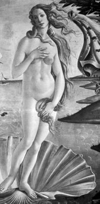

Şeylerin öldüren cazibesi
Güzel şeyler nefesimizi kesebiliyor. Bizi büyüleyebiliyor, hayret ve huşu içinde bırakabiliyor. Güzellik deneyimi bizi kendimizden geçirebiliyor, “bizi bizden alabiliyor”, “bizi kendimizden çıkarabiliyor”.
Bizi şevkle, yaşamımızın zenginleştiği hissiyle doldurarak güçlendirebiliyor, canlandırabiliyor. Güzel şeylere var oldukları için ve bize yaşattıkları için minnettarlık duyuyoruz. Bize bu tür hazlar yaşatan şeylere güzel diyoruz. Bu şeyler bir anlamda tam da “olmaları gerektiği gibi” görünüyor; onlarda “doğru” olan bir şeyler olduğunu hissediyoruz.
Beğeni Sorunu
Çok farklı kategoriden şeyleri güzel bulabiliyoruz: manzaralar, resimler, binalar, müzik eserleri, matematik teoremleri, edebiyat eserleri. Bize haz verenin ne olduğunu anlamaya çalıştığımızda kullandığımız sözcüklerimiz var: derin, uyumlu, uygun, ya da daha az ciddi bağlamlarda, büyüleyici, çekici, hoş, zarif. Güzel şeyler yapma dürtüsü sadece büyük ressamlara ya da yazarlara özgü de değil. Bir zanaatkâr da eserinin güzel olmasına özen gösteriyor; hatta masasını düzenleyen veya kravat seçen biri de aynı özeni gösteriyor. Elbette kimi zamanlar güzellikten başka şeylere de önem veriyoruz. Bir hatip konuşmasının etkili olmasını önemsiyor; sözlerinin güzelliğine aşırı takılırsa bu hedefine ulaşması güçleşebiliyor. Sanat alanında bile, başarılı eserlerin hepsi güzel değil. Bazıları özellikle uyumsuz, hatta çirkin olabiliyor. Picasso herhalde savaşın dehşetini protesto ettiği Guernica’yı güzel olsun diye yapmadı! Ahlakçılar da sık sık insan güzelliğinin sadece yüzeysel bir şey, bir tuzak ve kuruntu olduğunu ilan ediyorlar.

VENÜS’ÜN DOĞUŞU Detay
Sandro Botticelli (1445-1510)
Güzellik niçin felsefi ilgi uyandırıyor? Immanuel Kant onunla bağlantılı bir paradoksa, “beğeninin antinomisi”ne dikkat çekmiştir. Bir yandan, başlangıç noktası bizim duyusal hazzımız gibi görünüyor. “Büyüleyici” veya “sıkıcı” gibi sözcükler bir şeyin bizim üzerimizdeki etkisini bildiriyorlar. Bir şeye ancak bu şey bana büyüleyici geliyorsa büyüleyici diyorum. Aynı şekilde bir şey bana sıkıcı geliyorsa ona sıkıcı diyorum. Bu durumda şu eski vecize geçerlidir: de gustibus non est disputandum, yani beğeniler tartışılmaz. Ben naneli diş macununun tadından hoşlanıyorsam ama sen hoşlanmıyorsan, tartışmamıza gerek yok: “Herkes kendi yoluna.” Tartışma ancak olağandışı veya yapay bağlamlarda ortaya çıkabilir. Mesela, çok az eşya alarak yapılması gereken bir yolculuğa hazırlanırken nelerin alınması gerektiği üzerine tartışabiliriz. Diyelim ki tek bir diş macunu alacağız. Naneli olanı mı yoksa elmalı olanı mı alma konusunda tartışabiliriz. Ama naneli diş macununun tadı konusunda tartışabilir miyiz? Naneli diş macunu konusunda “doğru” olan bir duyum yoktur. Sana doğru gelen ne ise doğru olan odur. Bu da bu konuda “doğru” ve “yanlış” tan söz edemeyeceğimiz anlamına gelir. Oku nereye atarsanız atın hedefi vurduğunuz “hareketli bir hedef tahtası” hayal edin. Beğeniyle ilgili durum da biraz buna benzer. Yanlış yapma şansınız yoktur: Daima % 100 isabet kaydedersiniz.
Bu Kant’ın paradoksunun bir yanıdır. Şimdi de paradoksun diğer yanına bakalım. Her şeyden önce biz güzelliği birinci durumun ima ettiğinden daha fazla önemsiyoruz: Güzellik hakkında birbirimizle tartışıyoruz, birisi şeyleri bizim gibi görmediğinde sinirlenebiliyoruz. Diyelim sen ve ben aynı şeye bakıyoruz. Ben bu şeyin karşısında kendimden geçiyorum, fakat sen hiç etkilenmiyorsun. Bu rahatsız edici bir durumdur. Ben seni onun güzelliği konusunda ikna etmeye çalışırım. Eğer sen gece gökyüzündeki güzelliği göremiyorsan ya da Alplerin veya Büyük Kanyon’un görkeminden, tan kızıllığının ihtişamından veya çocukların hareketlerinin zarafetinden etkilenmiyorsan, o zaman aramızda büyük bir sorun var demektir. Bana göre böylesi şeyler bu tepkileri hak eder. Uç noktada, ben senin duyarsızlığını bir kabalık, bir sersemlik olarak görebilirim: “hissiz bir odun.” Elbette sen de beni aşırı duygusal bir gönül adamı olarak görebilirsin: “içli köfte.” İkimiz de birbirimizin ayarının bozuk olduğunu düşünürüz. İkimiz de kendi bakışımızı öne çıkarmaya çalışırız. Bu da şunu gösterir: Bu konularda bir standartta ısrarlı olma eğilimindeyiz. Beğenilerin iyisi kötüsü olabilir, hatta beğeni yargılarımız nesnel olarak doğru veya yanlış bile olabilir. Öyleyse beğeni konusunda salt öznellik (de gustibus. . .) ve en azından bir ölçüde nesnellik arasında salınıyoruz.
Güzellik Önemlidir (Çirkinlik de)
Dahası var. Diş macunu konusunda anlaşmaya gerek duymayabiliriz, ama bazı konularda –mesela bir yapının veya bir kentin nasıl görünmesi gerektiği gibi konularda– anlaşmaya gerek duyuyoruz. Güzel kentlerde ve köylerde yaşayan insanlara gıpta ediyoruz. Bu güzellikleri inşa eden sanatın kaybolmasından korkuyoruz. Benzer şekilde, suların, yeşilin ve doğanın bu güzelliklerini betonun ve asfaltın insafsız çirkinliğinin istila etmesinden korkuyoruz. Ayrıca görünen o ki bu korkular “bir zevk kaybı korkusundan” çok daha önemli bir şeylere işaret ediyor. Sanki ihtiyaç duyduğumuz, özümüze yakın bir şeyler yok oluyor. Bu yüzden insanlığa ait varlıkları koruma cemiyetleri kuruluyor; kaybolan zenginliklerimiz nostalji duygusunu besliyor, ve buradan çeşitli siyasal eylemler filizleniyor.
<>
Sadece güzel şeylerin kaybolmasını
değil,
onlardan aldığımız hazzın
kaybolmasını da önemsiyoruz.
<>
Sadece güzel şeylerin kaybolmasını değil, onlardan aldığımız hazzın kaybolmasını da önemsiyoruz. Wordwoth yaşlanmayla gelen güzellik duyusundaki düşüşe ağıt yakıyor:
Çayırların, koruların, derelerin,
Dünyanın ve her manzaranın bana
Göksel bir ışıkla aydınlanmış
Bir rüyanın görkemi ve canlılığı içinde
Göründüğü bir zaman vardı
Hiçbir şey eskisi gibi değil şimdi
Nereye dönersem döneyim
İster gece olsun ister gündüz
O zaman gördüklerimi göremiyorum şimdi
O halde Kant’ın antinomisinin ya da paradoksunun iki yanını nasıl uzlaştıracağız? Saf nesnellik ile saf öznellik arasında bir seçim yapmaktan başka bir çaremiz yok gibi görünüyor. Ama iki taraf da sorunsuz değilse, o zaman bunları nasıl uyumlu hale getireceğiz?
Nesnellik tarafını biraz yumuşatmayı deneyebiliriz. Başkalarının bizimle aynı beğenide olmasını istemek, bunu evrensel bir “talep” olarak ortaya koymak biraz fazla ileri gitmek olur. Korkarım ki ben Wagner’in incelikli güzelliklerini yeterince takdir edebilecek kadar müzikten anlayan biri değilim, ama hiç kimse de benden bunu talep etmiyor. Belki birtakım iyi niyetli kişiler beni bu konuda teşvik etmeye çalışabilirler, ama eğer Wagner dinlememeyi seçersem bu hiç kimseyi ilgilendirmez. Çocukların okuyor ve hayal gücünü kullanıyor olduğu gerçeği okudukları şeyin içeriğinden daha önemlidir. Avrupa sanatının en güzel resimlerinden biri olan Vermeer’in İnci Küpeli Kız tablosunun 1881 yılında Hague’deki açık artırmada iki guldene satıldığını öğrenmek şaşırtıcı olabilir. Ama bu durumla köle ticaretinin veya Viktoryen okul hayatının ayrıntılarını öğrendiğimizde yaşadığımız şaşkınlık aynı değildir. Açık artırmaya katılan insanlara hayret ederiz, ama onlara öfkelenmeyiz veya onlardan iğrenmeyiz. Bize kendi beğenisini dayatmaya çalışan insanlara, bize kendi ahlaki bakış açısını dayatmaya çalışan insanlardan daha çok kızarız. Görünen o ki bizler estetik alanındaki çeşitliliğe etik alanında olduğundan çok daha müsamahakârız.
Kant’ın antinomisinin öznel ya da de gustibus yanının da biraz yumuşatılması gerekiyor. Çok az şey diş macununun tadı kadar tartışılmazdır. Basmakalıp veya samimiyetsiz beğenileri, aşırı alımlı resimleri ve slogancı şiirleri kesinlikle kızgınlıkla karşılayabiliyoruz. “Ucuz” veya klişe duygular uyandırmaya yönelik sanatı hoş karşılamayabiliyoruz. Ayrıca resmi veya propaganda sanatının bize yalan söylediğini de biliyoruz. Bu tür beğenilere sahip insanları, tıpkı tren resimleri toplamaktan veya ayıcıklarıyla oynamaktan büyüyemeyen insanlar gibi çocuksu veya gelişmemiş bulabiliyoruz.
Kural Yok!
Güzelliğin saklı “ilkeleri”ni gün yüzüne çıkarmaya çalışabiliriz. Ama bu kuşkulu bir girişimdir. Sonuçta bunun, tarihsel olarak bütün bu tür girişimlerin başına geldiği gibi, başarısız kalacağını tahmin edebiliriz. Kant bu kuşkunun altında yatan nedeni şu şekilde saptar:
Herhangi birinin ona göre herhangi bir şeyi güzel olarak tanımaya zorlanabileceği hiçbir kural yoktur. Bir elbisenin, bir evin ya da bir çiçeğin güzel olup olmadığı üzerine yargımızı hiçbir zemin ya da temel önerme yoluyla kabul ettiremeyiz.
Bu kesinlikle doğrudur. Kurallar izlenmek içindir; eğer “sanatın kuralları” olsaydı özgünlüğe yer kalmazdı. Ayrıca güzeli duyularla kavramamıza gerek kalmazdı. Tıpkı bir odanın düzenini onu hiç görmemiş birine tasvir edebilmemiz gibi, bir şeyin güzelliğini de başkasına anlatmamız yeterli olurdu. Ama bunu yapamayız. Eğer biri bana bir bahçenin, bir resim galerisindeki bir tablonun ya da bir düğünün güzelliğini anlatacak olsa, orada bizzat bulunmadığım için, tek söyleyebileceğim şudur: “Onun güzel olduğunu duydum.” Bu durumda kendi yargımı seslendiremem. Aynı şekilde bir şeyin güzel olup olmadığını sorduğumuz bir kişi de, şayet o şeye dair bizzat kendisinin deneyimi yoksa, kendi yargısını dile getiremez. Elbette bu gibi durumlarda eleştirmenlerin söz konusu şeyi güzel bulduğunu söyleyebilirim, ama onun güzel olduğunu iddia edemem. Eleştirmenlerin beğenisine güvenebilirim, ama o zaman da sözlerimi belli bir kayıt altında dile getiririm: “Onların dediğine göre güzelmiş”. Bu da bir bakıma şöyle demektir: “Gidip bizzat kendim görmeliyim.”
Diğer yandan bir olay ya da nesne hakkındaki hislerimizi doğrudan söylemediğimiz de olur. Bir oyuna gidebilirim, onun aslında çok sıkıcı bir oyun olduğunu da düşünebilirim, ama çocuklarımdan birinin de bu oyunda rolü olduğu için ondan keyif alabilirim. Ya da hiç havamda olmadığımı bilerek aslında son derece güzel olan bir şeyden hiç zevk almayabilirim. Kişisel duygularımız güzeli değerlendirmemizi bulanıklaştırabilir; dahası içinde bulunduğumuz bu durumun farkında olabiliriz ve ara sıra yargılarımızı verirken kendi hislerimizi ya da hissizliğimizi hesaptan düşebiliriz. Bir şeyin güzelliğini gördüğümüz halde ondan zevk alamadığımız olur. Söylemesi zor ama kıskançlık ve haset duyduğumuz bile olur. O an için aynı duygular içinde olmasak bile, başka insanların bir şeyden büyülenmelerini anlayabiliriz.
Eleştirmenin Rolü
O halde bir eleştiri pratiğinden söz edebiliriz. Dikkatten kaçtığını düşündüğümüz şeylere, saklı güzelliklere veya çirkinliklere birbirimizin dikkatini (gözünü, kulağını veya anılarını) çekmeye çalışırız. Böylece başkalarının bizimle aynı çizgiye gelmesini umarız. Bu konuda bazı kişilerin diğerlerinden daha iyi olduğu açıktır. David Hume iyi bir eleştirmende bulunması gereken birkaç nitelikten söz etmiştir: O söz konusu nesneye karşı duyarlı olmalı, ince ayrımlara dikkat etmeli, deneyimli bir gözü ve kulağı olmalı, iyi bir edebiyat anlayışına sahip ve önyargısız olmalıdır.
Ama bu hâlâ bize neyin önemsenmesi gerektiğini söylemez. Eleştirmen ne yapar? Belki bir öneri şu olabilir: Eleştirmen bir yapıtın insanları şu veya bu şekilde etkileyip etkilemeyeceğini öngörmeye çalışır. Bu durumda demek ki bizim eleştirmen kendisini başka insanların yargılarının bir belirteci gibi görüyor. Bu Jean-Jacques Rousseau’nun görüşüydü: Beğeni, en çok sayıda insanın hoşlanacağı veya hoşlanmayacağı şeye dair yargıda bulunma yetisidir. Bir eleştirmen kendi tepkilerinin geniş kesimlerce paylaşılacağına inanan kişidir; bir yapıta verdiği tepki başkalarının beğenileri için bir turnusol testidir. Ama bu kuram toptan yanlış gibi görünüyor. P.G. Wodehouse’un “Köpek McIntosh Macerası” adlı öyküsünde, kültürsüz bir tiyatro yapımcısı dokuz yaşındaki kızını turnusol kâğıdı olarak kullanır: halkın beğenisinin mükemmel bir belirteci. Rousseau’nun görüşüne inansaydık bu kızın mükemmel bir beğenisi olduğunu kabul etmek zorunda kalırdık. Oysa Kant’ın söylediği gibi, bir güzellik yargısının iddiası herkesin onunla aynı fikirde olacağı değil, olması gerektiğidir. “Reality show” adıyla anılan programların iğrenç olduğunu söylediğimde, onların çoğu insanı iğrendirdiğini söylemiyorum, zira öyle olmadığını biliyorum. İğrendirmesi gerektiğini söylüyorum. Neden? Bu tür şeyler bu tür tepkiler doğurur da ondan! Ama işte yine döndük aynı noktaya: Karşılarınızda bir kez daha öznellik sorunu!
Hayal Kırıklığı
Güllerin ve gökyüzündeki yıldızların güzelliğinden söz ediyoruz. Bu güzelliklerin bizden belli tepkiler “talep” ettiğinden bahsediyoruz. Ama ne güller ne de yıldızlar talepte bulunur. Bunlar olsa olsa metaforik konuşmalardır. Belki de doğanın veya evrenin güzelliğinin parçası olan şeylerden biri onların insan dünyasına kayıtsızlıklarıdır. Sadece insanlar birbirinden taleplerde bulunurlar.
Peki, birbirimizden tepki talebinde bulunduğumuzda söz konusu olan nedir? Kullanılan dil ahlaki bir dildir, ama ahlakın hangi yönü söz konusudur? Bir zamanlar uzaya büyük yansıtıcı panellere sahip bir uydu yerleştirmekle ilgili bir öneri yapılmıştı. Ay kadar büyük olacaktı ve reklamcılar mesajlarını onun üstüne yansıtabileceklerdi. Şok olmuştum, fikrin kendisi bile beni şok etmeye yetmişti. Hiç utanmadan böyle bir teklifin yapılabildiği bir kültüre ait olduğum için kendimi kirlenmiş hissetmiştim. Böyle bir teklifte bulunan biri insan içine nasıl çıkabiliyordu? Bu hislerle geceye ve göğe baktım. Onları kutsal saydım. Bana göre uzaya bir reklam uydusu yerleştirme, uzaya “Coca Cola” ya da “McDonald’s” reklamı koyma fikri tartışılabilir bile değildi. “Abesle iştigal etmek” bu olsa gerekti. Bu şeylere “mutlak önem” atfetmemiz için dindar olmamız gerekmiyor. Eğer birileri kalkıp da onlara saygısızlık ederse bizim de “kutsalımıza tecavüz” edildiğini düşünerek karşı çıkma hakkımız doğar.
Belki de meseleyi “talepler” uyarınca değil de “hayal kırıklığı” uyarınca düşünmeliyiz: Büyük Kanyon’u ziyaret ettiğimizde ben zevkten havalara uçtuğum halde sen sıkılıyorsan seninle ilgili hayal kırıklığı yaşarım. Bana hüsran düşerken, aramıza uçurumlar girer. Bunun sendeki bir bozukluktan kaynaklandığını düşünebilirim: insanı tamamen insan yapan bir şeyin eksikliğinden.
Bunu şöyle ifade edebilirim: “Belki de yeterince dikkat etmiyorsun ya da gerektiği kadar önemsemiyorsun.” Ve bana göre bu Kant’ın paradoksunun çözümüne giden yolun başlangıcıdır. Güzelliğe karşı kör olanlar kendilerinin dışına çıkamazlar; belki de kendi kaygılarını ve ilgilerini unutamazlar, şöyle bir soluklanıp bakışlarını genişletemezler. Güzelliği takdir edebilmek için nesnesin kendisine yoğunlaşırız, ama onun uyandırdığı düşüncelerin sınırı yoktur. Güzellik hayal gücünün serbest oyununu harekete geçirir. Bizi şu veya bu şeyi düşünmeye yönlendirmez. İşte bu yüzden güzelliğin olduğu yerde kelimeler kifayetsiz kalır, nutkumuz tutulur. Kant’ın belirttiği gibi,
Bir estetik idea ile imgelem yetisinin öyle bir tasarımını anlıyorum ki, herhangi bir düşüncenin onun için yeterli olabilmesi söz konusu olmaksızın kendisi birçok düşünceye yol açar, ve böylece bir dil tarafından bütünüyle erişilebilir ve anlaşılabilir kılınamaz.
Güzellik başka şeylerin, dünyanın, kendimizden ve sınırlı kaygılarımızdan başka şeylerin değerini anlamak için, deyiş uygunsa, güverteyi boşaltmaktır. Yaban yaşamın güzelliği doğanın büyüklüğünden ve insanın küçüklüğünden bahseder; derelerin güzelliği ona sevgiyle ve ihtimamla bakmış kuşaklardan bahseder; güllerin güzelliği zevkin geçici doğasından ve ölümlülüğün kabul edilmesinden bahseder. Bu şeyler ruhumuzu tazeler, ve ne kadar dilimiz tutulsa da aslında onlara baktığımızda hissettiklerimiz bunlardır.
Bence kendi yaşantıları içinde bu tür anlamlar olmayanlara yönelik hayal kırıklığımızda haklıyız. Shakespeare gibi onlardan kuşku bile duyabiliriz:
İçinde hiç müzik olmayan adam,
Tatlı seslerin uyumuyla hareketlenmeyen,
İhanet, hile ve tecavüz için vardır
Ruhunun hareketleri gece kadar kasvetlidir
Ve hisleri Erebus kadar karanlık;
Kollayın kendinizi böyle bir adamdan.
Kendisinin dışına çıkamayan güzellik beğenisinden yoksun olan biri elbette bizi ilgilendirir. Her şeyden önce bizim hayallerimizi paylaşamaz o. Mamur çevrenin ya da doğal çevrenin idaresinden sorumluysa korkun, tehlikelidir. Hele bir de her şeyi gayrı safi milli hasıla çıtasıyla haklı kılmaya çalışan bir “iktisadi” modele bağlanmış, beşeri bilimleri, sanatları, bilimleri ve eğitimi metalaştırmadan başka bir şey bilmeyen bir yapının başkanlığına soyunmuşsa iyice tehlikelidir. Siyasal düşüncedeki bu çarpıklık aslında yeni bir gelişme değildir: Daha 1795’te büyük Alman şairi ve estetik kuramcısı Friedrich Schiller İnsanın Estetik Eğitimi Üzerine Mektuplar içinde bu korkuyu şöyle seslendiriyordu:
Günümüzde ihtiyaç egemendir ve batan insanlığı zalim boyunduruğuna doğru eğmektedir. Çağın büyük ilahı faydadır ve buna bütün güçler hizmet etmek, bütün kabiliyetler boyun eğmek durumundadır. Bu hantal terazide sanatın manevi başarısının hiçbir ağırlığı yok, ve o her çeşit canlandırmadan yoksun bırakılmış, yüzyılın gürültülü pazar meydanında yitip gitmiştir.
Güzelliğin değerinin bilinmesindeki manevi unsur belki eğitim konusunda çok daha açık bir şekilde görülebilir. Hayal gücünün serbest oyununa yer kalmadığında öğrenme tekrara dayanan sıkıcı bir işe dönüşür. Eğitim ve öğretim alanında başarı çocuğun hiç anlamadığı ekonomik sonuçlara göre ölçüldüğünde, okulun ve yetişkinler dünyasının temsil ettiği her şeye karşı öfke dolu bir isyandan başka ne bekleyebiliriz? Gerçek şudur: Ekonomik faaliyetlerimizin hakikatin ve güzelliğin hizmetinde olması gerekir; bunun tersi geçerli değildir.
İşte bizi kendimizden dışarı çıkaran güzellik bize bunları hatırlatır. Bu yüzden güzellik deneyimi kendisini bize “sırf” bir zevk, anlık bir elektriklenme olarak sunmaz. Bildiğimiz bir şey var: Güzellik hayatın derin veya tinsel yanıyla bağlantılıdır. Başka bir deyişle, bizi kendimizden geçiren güzellik bize dünyamız ve insan olarak onun içindeki yerimizle ilgili en önemli ve ebedi unsurları hatırlatır.